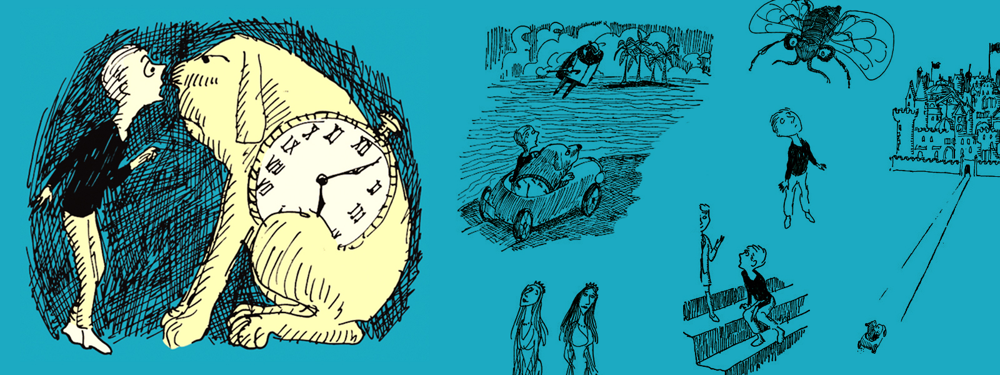

Jenny Liu Zhang
One of 100 students in the USC Iovine and Young Academy for The Arts, Technology and Business of Innovation.
Excited about design, tech, people, and space.
Portfolio: jennyzhang.me
Blog: jennytypes.com

One of 100 students in the USC Iovine and Young Academy for The Arts, Technology and Business of Innovation.
Excited about design, tech, people, and space.
Portfolio: jennyzhang.me
Blog: jennytypes.com
The Phantom Tollbooth by Norton Juster is one of my favorite books. I read it the first time when I was nine, and it got me interested in space. The main character, Milo was an average kid with plenty of time, as we all were, until a random turnpike tollbooth, an unfamiliar map, and a car appeared in his bedroom. He paid the fare and I flipped the page. Together, we soon found ourselves buying synonyms at the Dictionopolis Word Market, jumping to the Island of Conclusions, and meeting all sorts of new characters and concepts.
Today, I want to make my own tollbooths to new worlds. I'm passionate about design, product strategy, and multimedia journalism. I’m passionate about graphic and product design, entrepreneurship, web development, user experience research, interviewing, and writing. Like a tollbooth, each of these skills expose a topic to someone and encourage them to explore it. There are so many worlds to imagine. From space exploration to international crises, anyone could be the next Milo. All they need is a car, map, and tollbooth.
"What do you do when confronted by a person who doesn’t get why you are so excited about aerospace?"
I think,
Tell them about the future!
I see a future where Earth is one big city.
I see a future where your sky is my sky. You’ll never need to tell me what the sky looks like in India. I’ll be seeing it, because it’s my sky too. I just take the subway and I’m there in a few minutes. A connected world, post-boundaries. Lines don’t mean anything anymore. We forgot division even existed. People aren’t defined by what God gave them on the outside, or where God placed our lives when we were born. We’re all just People. Known for our choices, tastes, and opinions.
Today, Space is the empty space around us. Tomorrow, Space will be filled. Have you noticed how People build tall things up from the ground, to fill vertical space? Or how we pad ourselves with cloth-things that sit over our bodies, taking up the space around us? We transport ourselves in cars, machines bigger than we are, shuttling us in bulk through space. Space will be filled by the few belongings we always carry so everywhere can be Home, just in case we didn’t feel like catching a plane from Italy to Indiana that time of night. Space will be filled by our moving bodies, signs for every place, skyscrapers per square foot, subways, things, and us. The other people around us. We’ll know or recognize most of them, like on a college campus. We’ll know them from physical life, or maybe online life.
We’ll fill Space with our knowledge. We’ll know what “dark matter” is, we’ll know how air really behaves. In the future, the periodic table of elements will be an insanely colorful document, given to first graders as homework, that iconic, kaleidoscope textbook handout. First graders will be as smart as high school freshmen today, every year getting smarter, earlier. We will all know a bit of everything. Everyone will be multi-literate, no exceptions, by age seven.
Every kid’s birth certificate will be a Wi-Fi certificate, and their parents will log them on as soon as they’re home from the hospital. We’ll call it a “baptism,” a word so antiquated we’ll forget the old meaning. It’ll just mean slipping on their first pair of augmented-reality glasses as they lie in their crib. We’ll celebrate! Parents will invite relatives to watch their baby open their eyes to the world.
Everyone will wear augmented glasses or contacts. They’ll borrow stylistically from every era of history. Today, those 1960s, tortoise-colored Andy Warhol glasses are back in style. Tomorrow, everything will be back in style. I see a future where everyone’s dressed like time doesn’t exist. Every decade will be found in the now, in our clothes and our attitude. They’ll become genres we associate with, no longer a product of time.
And we’ll know more about Time, too. We’ll know that Space and Time are kind of the same thing. Parallel. As Time increases, so does our understanding of Space. And each other. We’ll know so much about the world that we’ll be comfortable, no matter where we go or who we’re with. This is what education does. I hear a future that sings in harmony. Observant, grateful, and happy. A world of mutual understanding.
Have you noticed how the paleness of the sky is sometimes the same shade as how you feel? Tired, a little somber, but still bright? Yes. How about how a guitar can sound as wistful as an autumn breeze feels? Do you understand? Yes. We’ll all understand. We will all have beautiful thoughts, together.
For now, we’re still piecing together our thoughts about space. We know what Space is, we just haven’t figured it all out. We’re still filling it, studying it, and trying to understand. Reaching, as surely as Time, toward a future where we know better.
Knowing it, well. That’s the future.
I know we just had an earthquake a few days ago. I know we have them almost every hour here in California. I still have faith. I’m a little scared, but just for myself. For People? Not really. We don’t belong here. Earth raised us, but Space is our Home. We’ll fill it up with our knowledge and newfound empathy for the stars.
We’ll think in atoms. Quarks. Even smaller. Whatever’s next. We’ll also think even bigger. Home will be every corner, with friends at every intersection. I see a future where Earth is one big city. Jupiter will be a city, too. Talk about expanding world views! Maybe we’ll study abroad in Andromeda. The Universe is our university. I see a future where Earth is one big city, big enough for everyone to have opportunity, their own space. We’ll know all the different ways Space is. How Time, Today, and Tomorrow exist. How People can be, and how we love and have fun.
I see a future where Earth is one big city. City will mean Earth, and Country will mean Solar System. We’ll pledge allegiance to the whole wide world, to the nearest star we came from. In this future, where International will mean a trip to another star, what will Galaxy mean? And what will Cluster mean? Supercluster? Universe? World?
World will mean Knowledge.
And Knowledge means Future.
Read more
A one-page website on a perspective that inspires me, especially when I struggle or feel lost.

jennylzh@usc.edu · Twitter · LinkedIn · Los Angeles, CA